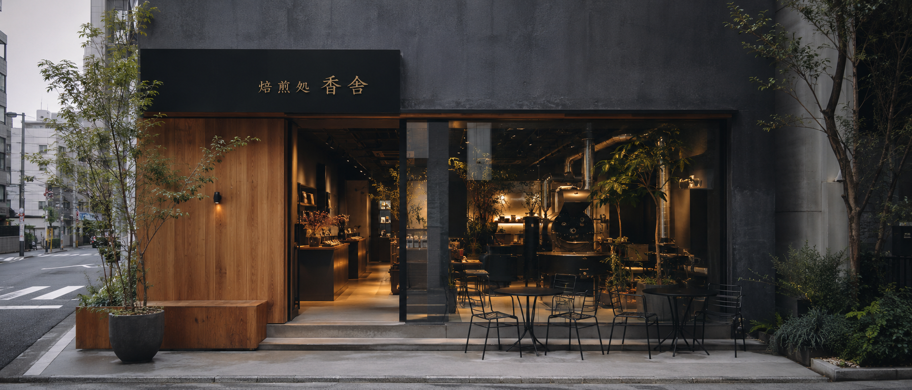
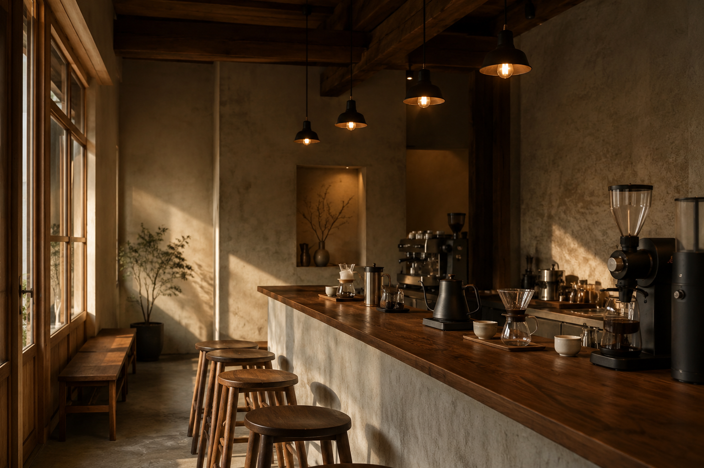

Shop Information & Access
店舗情報・アクセス
香りに満ちた、ひとときをお過ごしください

Information
基本情報
- 店名
- 焙煎珈琲処 香舎（こうしゃ）
- 住所
-
〒220-0011
神奈川県横浜市西区高島 2-X-X
香舎ビル 1F - 電話
- 045-XXX-XXXX
- 営業時間
- 下記「営業時間」をご参照ください
- 定休日
- 火曜日
- 席数
- カウンター 8席 / テーブル 16席
- 設備
- Wi-Fi / 電源 / 全席禁煙
- お支払い
-
現金 / 各種クレジットカード /
電子マネー / QR決済

Hours
営業時間
| 曜日 | 時間 |
|---|---|
| 平日（月・水〜金） | 8:00 – 20:00 |
| 土・日・祝日 | 9:00 – 21:00 |
| 火曜日 | 定休日 |
L.O. ラストオーダーは閉店30分前となります
祝日 祝日の営業は土日祝に準じます
焙煎の作業状況により、豆の香りとともにお迎えします。
ゆっくりとした時間を、どうぞお楽しみください。
Access
アクセス
神奈川県横浜市西区高島 2-X-X 香舎ビル 1F
電車でお越しの方
- JR / 各線「横浜駅」
みなみ東口より徒歩 5分 - みなとみらい線「新高島駅」
1番出口より徒歩 3分
徒歩でお越しの方
- 横浜駅から約5分の快適な距離です
- 途中に目印となる「香舎」の看板がございます
お車でお越しの方
- 専用駐車場はございません
- 近隣のコインパーキングをご利用ください
How to Get Here
横浜駅からの道順
みなみ東口を出てから、約5分です。
横浜駅
みなみ東口を出る
海側（東方向）へ
直進 約2分
交差点を
左折して直進
1Fに香舎の看板が
見えます
Follow Us